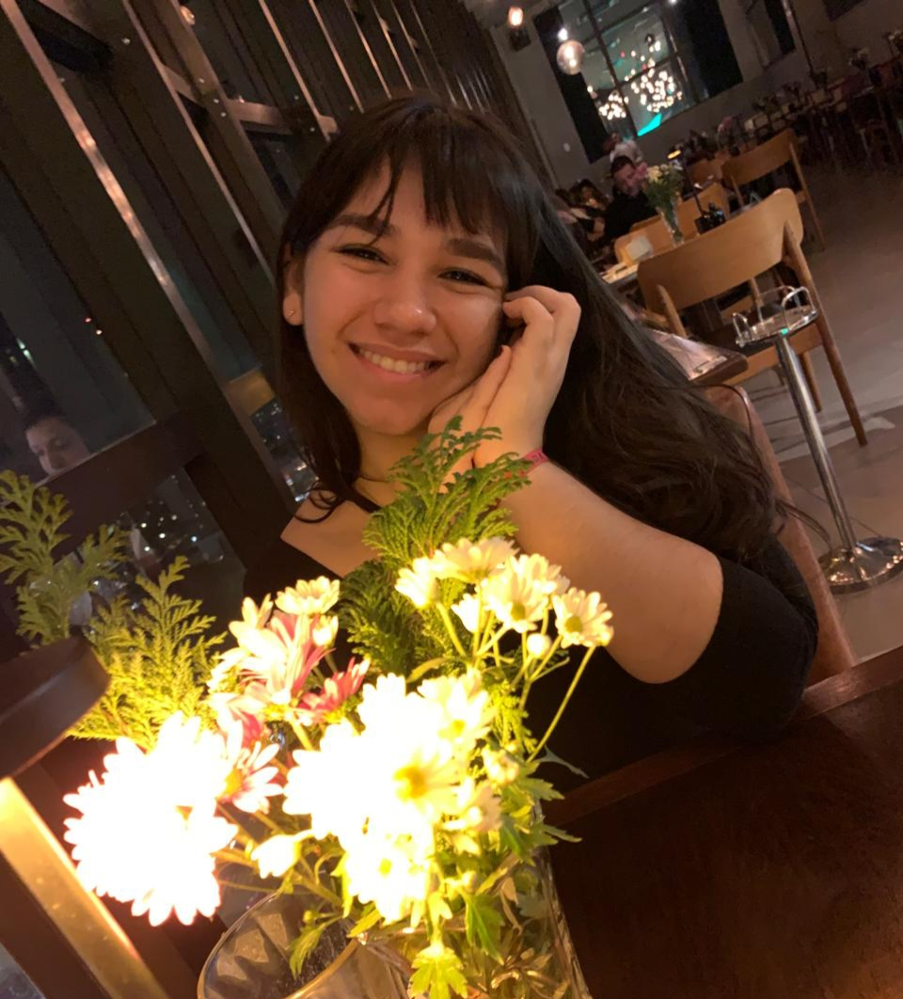

━────── •●• ──────━ UM POUCO SOBRE MIM ━────── •●• ──────━
Olá!Meu nome é Mariana, sou estudante do curso de Engenharia de Software da UNIGRAN Capital. Meu objetivo atualmente é melhorar minhas habilidades e conhecimentos para construir e obter uma oportunidade, para assim conseguindo cresçer no mercado de trabalho tech.
━────── •●• ──────━ CONTATO ━────── •●• ──────━
Se precisar de algo pode me contatar pelo:
- Whatsapp: (67) 98113-3232
- E-mail: marquescavalcantemariana@gmail.com
━────── •●• ──────━ PROJETOS ━────── •●• ──────━
Esses são alguns dos meus projetos:
━────── •●• ──────━ REDES SOCIAIS ━────── •●• ──────━
Você pode me encontrar nessas redes sociais abaixo!